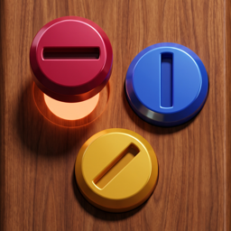

Screwsmith · Son güncelleme: 22 Eylül 2026
Screwsmith'i oynamak için hesap açman, adını ya da e-postanı vermen gerekmez. Oyun internetsiz oynanır. İnternet varken iki hizmet çalışır: reklamlar (Google AdMob) ve satın almalar (Apple, doğrulama için RevenueCat). Aşağıda her birinin neyi, neden işlediği yazıyor.
Seviyen, altının, aletlerin ve ayarların telefonunun kendi depolamasında saklanır; bize gönderilmez. Oyun, dengelemeye yardımcı olması için "seviye başladı / kazanıldı / kaybedildi" gibi olayları cihazındaki bir günlük dosyasına yazar; bu dosya da cihazdan çıkmaz. Oyunu silersen hepsi silinir.
Oyunda reklamlar Google AdMob ile gösterilir. Ödüllü reklamlar her zaman senin seçimindir; seviye arası reklamlar yalnızca 30. seviyeden sonra, seyrek ve sınırlı sayıda çıkar. Reklam göstermek için Google şu verileri işleyebilir: cihaz tanımlayıcıları (reklam tanımlayıcısı yalnızca izin verirsen), IP adresi ve buna bağlı yaklaşık konum, reklam etkileşimleri (gösterim, tıklama) ve reklam performansını ölçmek için tanılama verileri.
"Reklamsız" satın alımı seviye arası reklamları kalıcı olarak kaldırır.
Ödemeyi Apple alır; kart bilgilerini biz hiç görmeyiz. Satın almanın geçerli olduğunu doğrulamak için RevenueCat'e rastgele üretilmiş anonim bir kimlik ve satın alma kayıtları (hangi ürün, ne zaman, hangi ülkede) gönderilir. Bu kimlik adınla, e-postanla ya da reklam tanımlayıcınla ilişkilendirilmez. RevenueCat'in gizlilik politikası: revenuecat.com/privacy
Verilerini satmayız.
Oyun kamera, mikrofon, konum, rehber ya da bildirim izni istemez. İstediği tek izin yukarıda anlatılan izleme iznidir.
Oyun her yaşa uygun içeriktedir ancak özellikle çocuklara yönelik değildir. 13 yaşından küçük çocuklardan bilerek kişisel veri toplamayız.
Cihazındaki veriler oyunu silmekle gider. Reklam ve satın alma hizmetlerindeki anonim kayıtların silinmesini istersen alimertgulec38@gmail.com adresine yaz; 30 gün içinde yanıtlarız.
Ali Mert Güleç — alimertgulec38@gmail.com
Bu metin değişirse üstteki tarih güncellenir ve önemli değişiklikler oyunun sürüm notlarında duyurulur.